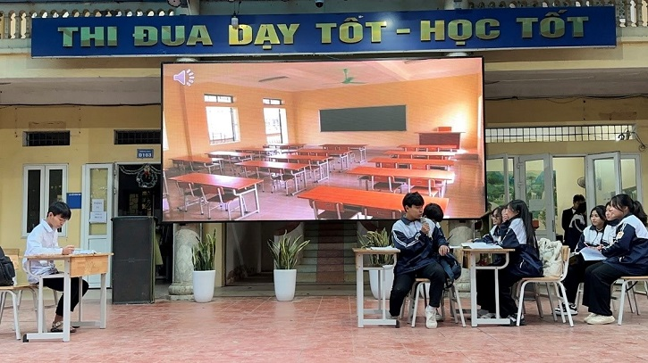

Website: cbqqo.edu.vn
Email: c3caobaquat2@hanoiedu.vn
Điện thoại: 0962 848 869 - 024 33 946 636 - 024 39 957 506
“Mỗi ngày đến trường là một ngày vui” đã trở thành khẩu hiệu quen thuộc của mỗi nhà trường, cũng là mục tiêu mà ngành giáo dục hướng tới trong quá trình xây dựng “trường học hạnh phúc”. Trong rất nhiều yếu tố tạo nên niềm vui của mỗi ngày đến trường, có lẽ sự thân thiện của các mối quan hệ trong nhà trường là điều vô cùng quan trọng.
Mối quan hệ trong trường học là sự gắn kết, kết nối, ảnh hưởng, tác động đến nhau của các cá nhân, tập thể trong cộng đồng học tập và rèn luyện. Mối quan hệ thân thiện là mối quan hệ lành mạnh, giúp đỡ, hỗ trợ nhau, ảnh hưởng tích cực đến nhau. Như vậy, chúng ta có thể thấy, thân thiện trong trường học là tạo dựng cho bản thân những mối quan hệ tốt, là sự gắn kết giữa tập thể và các cá nhân với nhau, tác động lên nhau những điều tích cực nhằm phát triển và cải thiện bản thân.
Nhận thức được điều này, ngay từ đầu năm học 2023 - 2024, ban giám hiệu trường THPT Cao Bá Quát – Quốc Oai đã lập kế hoạch đưa nội dung “Xây dựng mối quan hệ thân thiện trong trường học” làm chủ đề ngoại khóa tháng 1.
MC Quỳnh Chi và Quang Huy
Ngày 22/01/2024, các lớp 12D1,12D2,12D3,12D4, 10A4,10A5, 10D1 đã tổ chức buổi ngoại khóa rất thành công chủ đề ngoại khóa này và qua đó gửi gắm những thông điệp yêu thương.
Các tiết mục văn nghệ đặc sắc do các bạn học sinh biểu diễn trong chương trình
Bằng rất nhiều hoạt động với các cách thức triển khai đa dạng, phong phú: văn nghệ, tìm hiểu thực trạng, tiểu phẩm, chia sẻ giao lưu,....các bạn học sinh trường THPT Cao Bá Quát – Quốc Oai đã có thêm nhiều thông tin bổ ích để từ đó đưa ra các giải pháp, thúc đẩy các hành động thiết thực để cùng nhau xây dựng các mối quan hệ thân thiện trong trường học.
Tiểu phẩm “Chuyện của An” đã gửi gắm nhiều thông điệp ý nghĩa đến khán giả
- Để xây dựng một mối quan hệ thân thiện trong trường học mỗi cá nhân cần phải học cách tôn trọng ý kiến quan điểm của người khác, cũng như biết cách góp ý, chia sẻ quan điểm của bản thân với mọi người, cần phải có thái độ chuẩn mực, phù hợp.
- Cần giữ cho mình tư thế chủ động, tích cực, hăng hái, hãy niềm nở, tươi cười, lịch thiệp với mọi người. Biết lắng nghe ý kiến của đối phương, cần xưng hô đúng với vai vế.

- Đối với một số trường hợp có hành vi, lời nói thiếu tôn trọng, không đúng với vai vế và hoàn cảnh cần có hình phạt để răn đe, cảnh cáo.
Các bạn học sinh rất chăm chú và tương tác giao lưu tích cực
Thân thiện trong trường học giúp mỗi cá nhân ngày càng hăng hái, tích cực, làm tròn trách nhiệm, nhiệm vụ của bản thân, từ đó tác động tích cực đến thành tích về học tập của nhà trường, nó ảnh hưởng đến toàn xã hội. Khi mỗi cá nhân trong xã hội ngày càng phát triển, nâng cao bản thân thì sẽ tạo nên một hiệu ứng học tập, noi gương từ đó đất nước sẽ ngày càng phát triển
Xây dựng mối quan hệ thân thiện ko chỉ là trách nhiệm của cá nhân mà là của cả tập thể. Cùng nhau tạo dựng những mối quan hệ thân thiện lành mạnh giúp mỗi người càng thêm tin yêu cuộc sống và mỗi hành động nhỏ của mỗi người sẽ ảnh hưởng đến toàn xã hội, đất nước. Hãy cùng nhau tạo dựng, vun đắp những mối liên kết thân thiện trong trường học.
Và với thông điệp “Hãy yêu thương và chia sẻ, bạn sẽ nhận về niềm vui và hạnh phúc'' tin rằng tập thể cán bộ, giáo viên, nhân viên và học sinh trường THPT Cao Bá Quát – Quốc Oai sẽ tiếp tục có nhiều hành động thiết thực hơn nữa, mạnh mẽ hơn nữa để cùng nhau chung tay xây dựng một môi trường thân thiện để mỗi ngày đến trường là một ngày vui!
Thực hiện: Nguyễn Thị Minh Nguyệt
Duyệt: NTH